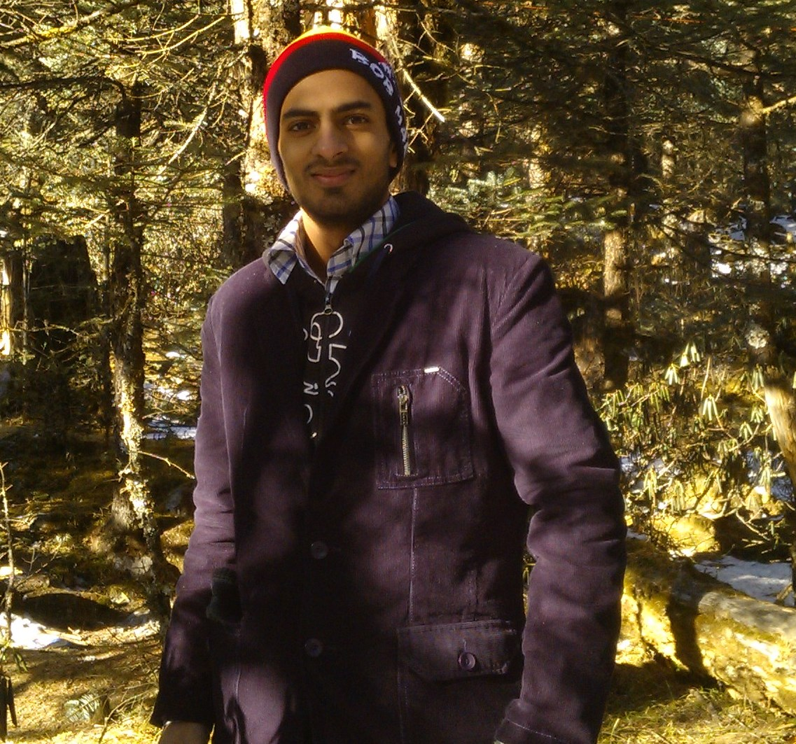

Anish Agarwal
About Me
About Me
About Me
hello there..!! Thanks for stopping by my portfolio website. I'm assuming that since you are at about me section of my page, you want to know a little about me. Well i am a team player who has great enthusiasm for coding, design, Torrent Movies :) and Football.
I think i am fun to be with guy who has the ability to draw inspiration from everyday.
I have plenty of experience in programming languages such as C, C++, Python and web technologies such as HTML5, CSS3, Javascript, Jquery and Php. I also have the good knowlege of Mysql.
I have good experience in handling various tools such as Adobe Photoshop, Adobe Dreamweaver, Apache, Eclipse etc.
Schooling And College
Schooling And College
I did my intermediate from Emmanuel Mission School, Kota. Before that i did secondary schooling from Birla Vidya Mandir, Nainital.
Currently i am in 8th semester pursuing my B-tech degree in computer science from Jaypee Institute Of Information Technology, Noida.
Works
Works
During these four year of my college life i did many projects and experiments in different fields such as programming, web development, mobile application, open source project, networking, Image processing.
I also did a survey on a company's customer attraction and retention strategies.
if you want to know about my work then browse through the project section of my page. It contains the description about some of my good projects.
Source code can be downloaded from my github page. Goto Contact section for github link.
back to the homepage